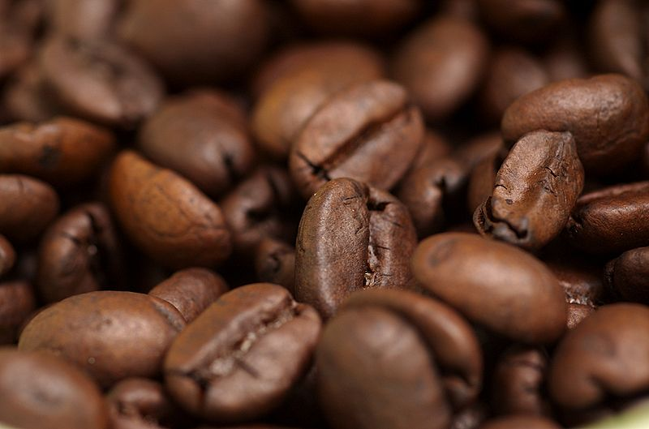

Kopian

Dalam perjalananmu melewati jalan berliku di pegunungan yang menjulang tinggi, aroma kopi segar memeluk indra penciumanmu seolah mengundangmu untuk mengikuti jejaknya. Di sebuah desa kecil yang tersembunyi di lereng gunung, terdapat ladang kopi yang memberikan kehidupan pada merek terkenal ini.
Setiap tegukan kopi Kopian adalah kisah petualangan dari tanah tempat kopi tumbuh, melalui tangan-tangan yang penuh dedikasi, hingga ke tahap penyeduhan yang sempurna di cangkirmu. Dengan setiap tegukan, kamu membawa dirimu pada perjalanan yang memenuhi jiwa dengan kenikmatan dan kepuasan yang mendalam. Kopian bukan sekadar kopi, melainkan cerita yang memperkaya pengalaman hidupmu.
Varian
Dalam dunia kopi yang luas, terdapat berbagai varian yang menggoda selera, memikat indera penciuman, dan memanjakan lidah. Di setiap tegukan, kita tidak hanya merasakan rasa, tetapi juga merasakan kisah yang tersembunyi di balik biji kopi yang telah diperjalani melalui proses panjang dari ladang hingga cangkir kita.
Kopi hitam, yang mungkin menjadi varian yang paling umum, menawarkan kekuatan dan keaslian yang klasik. Dengan aroma yang menggugah selera dan rasa yang mendalam, kopi hitam menjadi sahabat setia di pagi hari dan pendamping yang sempurna di siang hari yang sibuk. Tidak pernah mengkhianati dengan karakternya yang tegas, kopi hitam adalah representasi dari sederhana yang elegan.
Selain itu, kita memiliki latte yang memadukan kehangatan espresso dengan kelembutan susu, menciptakan harmoni rasa yang menggoda. Lapisan krimi dari susu yang diuapkan menambah kelezatan setiap tegukan, sementara rasa kaya dari espresso memberikan karakter yang mendalam. Latte adalah simfoni rasa yang melibatkan indera kita dalam pengalaman yang menyenangkan.
Cappuccino, dengan perpaduan espresso, susu, dan busa susu, menawarkan kompleksitas rasa yang memanjakan lidah. Dengan lapisan busa susu yang lembut di atasnya, cappuccino memberikan sensasi yang memuaskan dengan setiap tegukan. Rasanya yang seimbang antara manis dan pahit, menjadikan cappuccino sebagai pilihan yang sempurna untuk menikmati momen santai di tengah kesibukan.
Dari Americano yang sederhana namun kuat, hingga Flat White yang lembut dan berkelas, setiap varian kopi menawarkan pengalaman yang unik. Melalui sentuhan biji kopi yang diproses dengan cermat dan keahlian, kopi membawa kita dalam perjalanan rasa yang memuaskan. Di setiap cangkir kopi, terdapat petualangan rasa yang menanti untuk dinikmati, menjadikan kopi sebagai teman setia dalam setiap momen kehidupan.